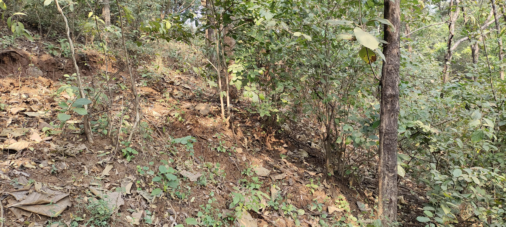

2022-11-29
After getting only 6 hours of sleep, 2 hour train journey, and 1.5h of waiting, Hitesh and Sri arrived. Only tell me that we have no mattock because his father misplaced ours and no shop are open right now.
After a small argument, Kashish and I hopped on his scooter and went to Bhiwandi. THere, Kashish picked up his new 10 speed chain and a mattock.
After we reached back, we spoke about Kashish’s PC plans and Sri was giving him advice on video editing. Hitesh and Sri left shortly after. They did ~8 runs while we were gone. Now we were left alone to build.
To be fair, Kashish and I did scout the hill while waiting for them.

This has tree shade like Pashan, and has potential for trail building from scratch - paving a path where there is none, not adding features to natural trails. With a spot for Kalyan’s very own death drop, Vishal Gap and Snake Line, it seems like this going to be the mail Kalyan riding spot for a while. I plan on building only for the next 6 months, getting my MTB to test features.Watching Mark Mathews and seeing Kashish’s determination leads me to believe that this hill is an opportunity waiting to be capitalized on. Smal hill, great tree cover, and supportive forest officer - the only rule is to not die. After home trails where I have to remain cautious of encountering forest authority, this permission is a breath of fresh air.
We rebuilt the old table. The top soil had withered away, leaving only the base of rocks. As usual, I did the digging.Kashish collected the soil and put it on top of the jump, with a little something called ghamela. I don’t know what it is called in english. We made renewed it. We may have to lengthen the landing and make the take-off steeper. But I doubt it. The speed into the jump is more than enough; I usually overshoot the landing.
After what must be 2 hours of building, some cursing at the others for not joining the build, some future plan discussions, we ended the day. By the end, I just got onto my laptop. I was sitting there on the side of the trail with my laptop configuring a PC build. It was a sight to see.
I later went to Kashish’s place to refill my bottle and show him arya’s film. He liked it. I explained to him that we have many recources, that knowledge is abundant, we just have to seek it out. The main reason I went to his place is because I did not get my bicycle with me, and sharing rickshaw to station costs rs40 from his place.
Big thanks to him for the pick up and drop. I don’t get the bike because of this one asshole at Dadar station. He is always there. Always catches me for not getting the luggage ticker for my MTB. Fucker has caught me thrice, consecutively. That costs 200, so 40 rupees is much better.
I realize that I have learnt to thrive in Mumbai’s lawlessness and corruption. I reckon I will miss it.
Here’s Mumbai’s very own Pashan.
To keep up with the Pimplas building journey, subscribe by email.
flying kisses